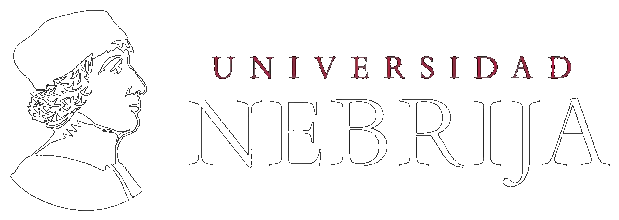
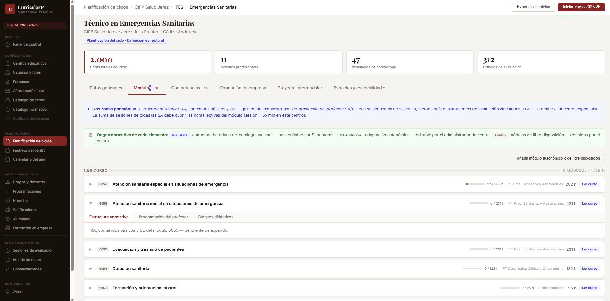

Máster Universitario en Formación del Profesorado · Especialidad FP Sanidad · Universidad Nebrija
Trabajo Fin de Máster — Proyecto de Innovación
Tutor: Dr. Antonio Camargo García
Alumno: José Antonio Sola Jiménez
Junio 2026
Justificación del proyecto
LO 3/2022 y RD 659/2023: la reforma más profunda del sistema de Formación Profesional en décadas. Situaciones de aprendizaje, modelo dual, trazabilidad por competencias, acreditación parcial acumulable.
Complejidad técnica de la programación didáctica: resultados de aprendizaje, criterios de evaluación con ponderaciones, instrumentos, temporalización, seguimiento trimestral. Un documento de considerable exigencia estructural.
Desajuste con las herramientas disponibles: Séneca gestiona la dimensión administrativa; Moodle gestiona el aprendizaje. Ninguna herramienta toma la jerarquía curricular normativa de la Formación Profesional como eje de diseño.
Consecuencia práctica: los docentes gestionan la complejidad curricular con soluciones improvisadas — Word, hojas de cálculo, documentos sueltos. Trabajo que se rehace en su mayor parte cada curso académico.
Estado de la cuestión y marco teórico
La transformación digital de la Formación Profesional es prioridad reconocida a nivel europeo (Cedefop, 2020). Los marcos de referencia para la digitalización educativa convergen en la necesidad de sistemas específicos por modalidad.
Existe investigación sobre gestión curricular por competencias, pero ningún sistema digital específico toma la jerarquía normativa de la Formación Profesional española como eje vertebrador de su modelo de datos.
Los sistemas existentes se centran en gestión administrativa (Séneca) o en plataformas de aprendizaje (Moodle) — no en gestión curricular estructural. El espacio específico queda sin cubrir.
Metodología: Design-Based Research (DBR). Investigación aplicada que integra rigor teórico con relevancia práctica, especialmente adecuada para el desarrollo de innovaciones educativas complejas.
LO 3/2022: el resultado de aprendizaje como unidad curricular operativa. Introduce la acreditación parcial acumulable como principio estructural del sistema.
RD 659/2023: desarrollo reglamentario. La situación de aprendizaje como unidad metodológica básica de la programación didáctica. El modelo dual como elemento estructural, no optativo.
La trazabilidad curricular — del instrumento de evaluación aplicado en el aula a la competencia profesional del título — es una exigencia normativa. No puede añadirse a posteriori: debe estar en la arquitectura.
La variabilidad autonómica en el desarrollo curricular de los títulos añade una capa de complejidad que los sistemas existentes no resuelven de forma general para el conjunto del territorio.
La propuesta
Diseñar y desarrollar una plataforma web que permita a los centros de Formación Profesional gestionar de forma integral, trazable y alineada con la normativa vigente toda la cadena curricular de sus ciclos formativos, desde la definición estructural del ciclo hasta la calificación individualizada de cada alumno.
Qué es
Una plataforma diseñada desde la jerarquía normativa propia de la Formación Profesional española. Gestiona la complejidad curricular específica del sistema: ciclos, módulos, resultados de aprendizaje, criterios de evaluación, situaciones de aprendizaje, formación en empresa y seguimiento del alumnado.
Qué no es
No es un gestor administrativo de centro ni una plataforma de aprendizaje genérica. No replica Séneca ni Moodle. Su función principal no es facilitar la interacción docente-alumno en el proceso de aprendizaje, sino gestionar la estructura curricular normativa y su traducción en la programación de cada centro.
Alcance
Válida para cualquier ciclo formativo, familia profesional y comunidad autónoma de España. El sistema proporciona la estructura curricular y permite al centro adaptarla a su contexto normativo concreto, sin imponer ningún marco autonómico específico.
Metodología DBR
Design-Based Research: análisis de necesidades del sistema → diseño del modelo de datos → desarrollo del prototipo funcional → validación con docentes en activo → resultados y líneas de desarrollo futuro. Ciclo iterativo con énfasis en la relevancia práctica.
Arquitectura del sistema · Modelo de datos
Resultado — Prototipo funcional navegable
jasola.github.io/curriculafp-prototipo

Evaluación del prototipo
El modelo refleja la lógica de la práctica docente real
Los docentes participantes reconocieron en la estructura de CurriculaFP la lógica de su propio trabajo. El análisis funcional previo capturó adecuadamente la naturaleza del problema.
Funcionalidad más valorada: SA vinculadas a RA y criterios de evaluación
La cadena situación de aprendizaje → resultado de aprendizaje → criterio de evaluación fue la funcionalidad con mayor valoración. Hace visible la trazabilidad de evidencias del aprendizaje que la normativa exige.
Orientación concreta para el desarrollo siguiente
Catálogos predefinidos de instrumentos de evaluación como mejora de mayor impacto percibido. Demanda real no identificada en el análisis previo — coherente con el modelo de aceptación tecnológica.
Conclusiones
La separación entre capas de gestión es el eje que ordena la complejidad
Distinguir lo que es permanente — la estructura curricular del ciclo — de lo que es anual — los grupos, las asignaciones y las calificaciones de ese curso — elimina el trabajo repetido y hace visible una distinción que la práctica docente maneja implícitamente pero que ninguna herramienta había formalizado.
La trazabilidad no se añade: emerge de la arquitectura
Cuando el modelo de datos refleja fielmente la jerarquía normativa del sistema, la trazabilidad aparece de forma natural. No es una funcionalidad que se implementa por separado: es la consecuencia de tomar esa jerarquía como estructura central.
Complejidad del modelo no implica complejidad de interfaz
El prototipo refuta la hipótesis implícita de que un modelo de datos complejo produce inevitablemente una interfaz difícil de usar. La pantalla más compleja del sistema fue también la más valorada en la evaluación con docentes.
"CurriculaFP nació de un diagnóstico concreto. El trabajo desarrollado ha permitido verificar que el diagnóstico era correcto y que la respuesta propuesta es viable."
Estado actual del desarrollo
En curso
Fase 1 — Fundamentos de programación
Python iniciado con datos reales de CurriculaFP — variables, listas, diccionarios, funciones. Entorno configurado: Python 3.11.9, VS Code. Recursos: Píldoras Informáticas (Python), Midudev (SQL).
Siguiente
Fases 2-4 — Backend, API y frontend
PostgreSQL con el modelo de datos de CurriculaFP → Django (Fazt, tutorial oficial) → Django REST Framework (Codigofacilito) → React (Midudev). Estimación: 4-5 meses a 1-2 horas diarias.
Horizonte
Fase 5 — MVP y primer piloto
Despliegue en Railway o Render. Primer piloto con centro educativo de referencia ya identificado. Modelo de suscripción para centros de Formación Profesional.